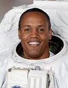

Lyndon B. Johnson Space Center
Houston, Texas 77058
|
National Aeronautics and Space Administration Lyndon B. Johnson Space Center Houston, Texas 77058 |
 |
Biographical Data |
||
Benjamin Alvin Drew, JR. (Colonel, USAF, Ret.)
NASA Astronaut
PERSONAL DATA: Born November 5, 1962 in Washington, DC. His parents, Muriel and Benjamin Drew, Sr., reside in Fort Washington, Maryland.
EDUCATION:
ORGANIZATIONS: Society of Experimental Test Pilots, American Helicopter Society.
EXPERIENCE: Upon graduation from the United States Air Force Academy, Drew entered the U.S. Air Force as a Second Lieutenant in May 1984. He completed Undergraduate Helicopter Pilot Training - at Fort Rucker, Alabama, earning a helicopter qualification and his pilot wings in March 1985. His initial assignment was as a combat rescue helicopter pilot from 1985 to 1987. In 1987, he transitioned into USAF special operations. There flew 60 combat missions in operations over Panama (1989), the Persian Gulf (1990-1991) and Northern Iraq (1991-1992). In 1992, he returned to flight training – first obtaining a rating in jet aircraft in April 1993, and then, becoming a test pilot, at the United States Naval Test Pilot School in June 1994. He subsequently worked as a project test pilot, commanded two flight test organizations, and served on the U.S. Air Force's Air Combat Command staff. As a Command Pilot with more than 25 years experience, Colonel Drew retired from the Air Force in September 2010.
He has more than 3,500 hours flying experience and has piloted 30 different types of aircraft.
NASA EXPERIENCE: Selected as a mission specialist by NASA in July 2000, Drew reported for training in August 2000. Following the completion of 2 years of training and evaluation, he was initially assigned technical duties in the Astronaut Office Station Operations Branch. From January-November 2009, he served as Director of Operations at the Gagarin Cosmonaut Training Center in Star City, Russia. He has logged more than 612 hours in space on STS-118 in 2007 and STS 133 in 2011.
SPACE FLIGHT EXPERIENCE: STS-118 (August 8 -21, 2007) was the 119th space shuttle flight, the 22nd flight to the station, and the 20th flight for Endeavour. During the mission Endeavour's crew successfully added another truss segment, a new gyroscope and external spare parts platform to the International Space Station. A new system that enables docked shuttles to draw electrical power from the station to extend visits to the outpost was activated successfully. A total of four spacewalks (EVAs) were performed by three crewmembers. Endeavour carried some 5,000 pounds of equipment and supplies to the station and returned to Earth with some 4,000 pounds of hardware and no longer needed equipment. Traveling 5.3 million miles in space, the STS-118 mission was completed in 12 days, 17 hours, 55 minutes and 34 seconds.
STS-133 (February 24 - March 9, 2010), was the 39th and final mission for Space Shuttle Discovery. During the 13-day flight, the Discovery crew delivered the Permanent Multipurpose Module (PMM) and the fourth Express Logistics Carrier (ELC) to the ISS. The crew also delivered critical spare components including Robonaut 2, or R2, the first human-like robot in space. The mission's two space walks assisted in outfitting the truss of the station and completed a variety of other tasks designed to upgrade station systems. The mission was accomplished in 202 Earth orbits, traveling 5.3 million miles in 307 hours and 3 minutes.
OCTOBER 2013